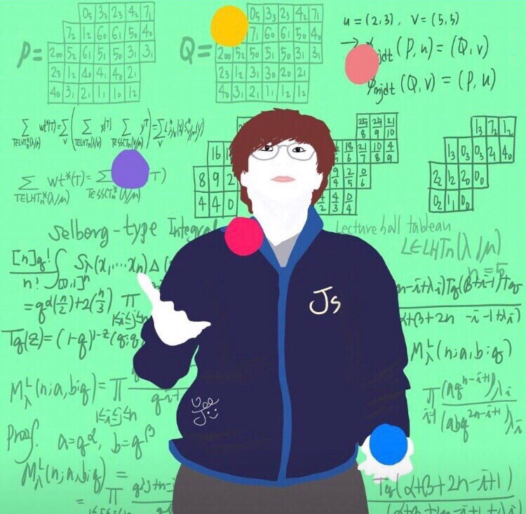

Jang Soo Kim
Home
Associate Professor Department of Mathematics Sungkyunkwan University (SKKU) 2066 Seobu-ro, Jangan-gu Suwon, Gyeonggi-do 16419 South Korea Office: 31256B in Natural Science Building #1 Email: name@skku.edu, where name=jangsookim

Papers
Preprints
- Negative moments of orthogonal polynomials (with Jihyeug Jang, Donghyun Kim, Minho Song, U-Keun Song), arxiv:2201.11344
- Three families of q-Lommel polynomials (with Dennis Stanton), arXiv:2105.10096
- Refined canonical stable Grothendieck polynomials and their duals (with Byung-Hak Hwang, Jihyeug Jang, Minho Song, and U-Keun Song), arXiv:2104.04251
- Jacobi–Trudi formulas for flagged refined dual stable Grothendieck polynomials, to appear in Algebraic Combinatorics, arXiv:2008.12000
- Enumeration of standard barely set-valued tableaux of shifted shapes (with Michael Schlosser and Meesue Yoo), arXiv:2006.03253
- Weight multiplicities and Young tableaux through affine crystals (with Kyu-Hwan Lee and Se-jin Oh), to appear in Memoirs of the AMS, arXiv:1703.10321
- Symmetric Pascal matrices and related graphs (with Gi-Sang Cheon, Seyed Ahmad Mojallal, Meesue Yoo), to appear in Linear and Multilinear Algebra
- Orthogonal polynomials of type \(R_I\) (with Dennis Stanton), to appear in Ramanujan Journal, arXiv:2009.14475
2022
- Enumeration of Gelfand–Cetlin type reduced words (with Yunhyung Cho and Eunjeong Lee), Electronic J. Combin. 29(1)(2022), #P1.27, arXiv:2009.06906
2021
- Generalized Schur function determinants using the Bazin identity (with Meesue Yoo), SIAM J. Discrete Math. 35 (2021), no. 3, 1650–1672, arXiv:2012.08741
- Whitney numbers for poset cones (with Galen Dorpalen-Barry and Vic Reiner), Order 38 (2021), no. 2, 283–322, arXiv:1906.00036
- Jacobi–Trudi formula for refined dual stable Grothendieck polynomials, J. Combin. Theory Ser. A 180 (2021), 105415, arXiv:2003.00540
- Volumes of generalized Chan-Robbins-Yuen polytopes (with Sylvie Corteel and Karola Meszaros), Discrete & Computational Geometry, 65, 510–530 (2021), arXiv:1704.02701
2020
- Volumes of flow polytopes related to caracol graphs (with Jihyeug Jang), Electronic J. Combin. 27(4)(2020), #P4.21, arXiv:1911.10703
- Lecture hall tableaux (with Sylvie Corteel), Adv. Math. 371 (2020) 107266, arXiv:1804.02489
- On linearization coefficients of q-Laguerre polynomials (with Byung-Hak Hwang, Jaeseong Oh and Sang-Hoon Yu), Electronic J. Combin. 27(2)(2020), #P2.22, arXiv:2001.01930
- Enumeration of bounded lecture hall tableaux (with Sylvie Corteel), Séminaire Lotharingien de Combinatoire B81f (2020), 28 pp, arXiv:1904.10602
- Product formulas for certain skew tableaux (with Meesue Yoo), European J. Combin. 84 (2020), 103038, arXiv:1806.01525
2019
- Reverse plane partitions of skew staircase shapes and q-Euler numbers (with Byung-Hak Hwang, Meesue Yoo and Sun-mi Yun), J. Combin. Theory Ser. A 168 (2019), 120–163, arXiv:1711.02337
- Hook length property of d-complete posets via q-integrals (with Meesue Yoo), J. Combin. Theory, Ser. A 162 (2019), 167-221, arXiv:1708.09109
2018
- Proof of Chapoton's conjecture on Newton polygons of q-Ehrhart polynomials (with U-Keun Song), Electronic J. Combin. 25(2)(2018), #P2.51 arXiv:1704.05621
- Spectral properties of Pascal graphs (with Gi-Sang Cheon and Seyed Ahmad Mojallal), Linear and Multilinear Algebra 66 (2018), 1403-1417
- On the f-vectors of Gelfand-Cetlin polytopes (with Byung Hee An and Yunhyung Cho), European J. Combin. 67 (2018), 61-77, arXiv:1606.05957
2017
- Colored permutations with no monochromatic cycles (with Dongsu Kim and Seunghyun Seo), J. Korean Math. Soc. 54 (2017), No. 4, pp. 1149–1161
- Flow polytopes with Catalan volumes (with Sylvie Corteel and Karola Meszaros), Comptes Rendus Mathematique 355(3) (2017), 248–259, arXiv:1612.00102
- On q-integrals over order polytopes (with Dennis Stanton), Adv. Math. 308(21) (2017), 1269–1317, arXiv:1608.03342
- A new q-Selberg integral, Schur functions, and Young books (with Soichi Okada), Ramanujan Journal 42 (2017), 43-57, arXiv:1412.7914
- The Selberg integral and Young books (with Suho Oh), J. Combin. Theory Ser. A 145 (2017), 1–24, arXiv:1409.1317
2016
- Moments of orthogonal polynomials and combinatorics (with Sylvie Corteel and Dennis Stanton), a book chapter, IMA Volumes in Mathematics and its Applications Vol. 159, Springer
- Combinatorial proof of a partial theta function identity of Warnaar (with Kathy Ji and Byungchan Kim), Int. J. Number Theory 12, 1475-1482 (2016)
- Generalized Dyck tilings (with Matthieu Josuat-Vergès), European J. Combin. 51 (2016), 458–474, arXiv:1410.1270
2015
- The combinatorics of associated Laguerre polynomials (with Dennis Stanton), SIGMA 11 (2015), 039, arXiv:1501.03880
- Bootstrapping and Askey-Wilson polynomials (with Dennis Stanton), J. Math. Anal. Appl., 421 (2015), 501-520, arXiv:1403.0053
2014
- Moments of Askey-Wilson polynomials (with Dennis Stanton), J. Combin. Theory Ser. A 125 (2014), 113-145, arXiv:1207.3446
- Annular noncrossing permutations and minimal transitive factorizations (with Seunghyun Seo and Heesung Shin), J. Combin. Theory Ser. A 124 (2014), 251–262, arXiv:1201.5703
- Dyck tilings, increasing trees, descents, and inversions (with Karola Mészáros, Greta Panova, David B. Wilson), J. Combin. Theory Ser. A 122 (2014), 9-27, arXiv:1205.6578
2013
- Crossings of signed permutations and q-Eulerian numbers of type B (with Sylvie Corteel and Matthieu Josuat-Vergès), Journal of Combinatorics 4 (2013), no. 2, 191-228, arXiv:1203.0154
- Cyclic sieving phenomenon on annular noncrossing permutations, Seminaire Lotharingien de Combinatoire B69b (2013), 20 pp, arXiv:1210.7353
- Bijections on rooted trees with fixed size of maximal decreasing subtrees, Annals of Combinatorics 17 (2013), no. 2, 339-352, arXiv:1108.6038
- Touchard-Riordan formulas, T-fractions, and Jacobi's triple product identity (with Matthieu Josuat-Vergès), Ramanujan J. 30 (2013), no. 3, 341-378, arXiv:1101.5608
2012
- Enumeration formulas for generalized q-Euler numbers, Adv. App. Math. 49 (2012), 326-350, arXiv:1104.4584
- Proofs of two conjectures of Kenyon and Wilson on Dyck tilings, J. Combin. Theory Ser. A 119 (2012), 1692-1710, arXiv:1108.5558
2011
- Combinatorial rigidity of 3-dimensional simplicial polytopes (with Suyoung Choi), Int. Math. Res. Notices 2011 (2011), 1935-1951, arXiv:1002.0828
- Bijections on two variations of noncrossing partitions, Discrete Math., 311 (2011), 1057-1063, arXiv:0812.4091
- Front representation of set partitions, SIAM J. Discrete Math. 25 (2011), 447-461, arXiv:0907.1485
- Combinatorics on permutation tableaux of type A and type B (with Sylvie Corteel), European J. Combin. 32 (2011), 563-579, arXiv:1006.3812
- New interpretations for noncrossing partitions of classical types, J. Combin. Theory Ser. A 118 (2011), 1168-1189, arXiv:0910.2036
- q-analog of tableau containment, J. Combin. Theory Ser. A 118 (2011),1021-1038, arXiv:0812.1256
- Chain enumeration of k-divisible noncrossing partitions of classical types, J. Combin. Theory Ser. A 118 (2011), 879-898, arXiv:0908.2641
2010
- A note on 2-distant noncrossing partitions and weighted Motzkin paths (with Ira M. Gessel), Discrete Math. 310 (2010), 3421-3425, arXiv:1003.5301
- A combinatorial approach to the power of 2 in the number of involutions (with Dongsu Kim), J. Combin. Theory Ser. A 117 (2010), 1082-1094, arXiv:0902.4311
- A note on the total number of cycles of even and odd permutations, Discrete Math. 310 (2010), 1398-1400, arXiv:0909.0683
- A combinatorial proof of a formula for Betti numbers of a stacked polytope (with Suyoung Choi), Electron. J. Combin. 17 (2010), #R9, arXiv:0902.2444
- Skew domino Schensted algorithm and sign-imbalance, European J. Combin. 31 (2010), 210-229, arXiv:0711.1035
2009
- k-distant crossings and nestings of matchings and partitions (with Dan Drake), DMTCS proc., AK (FPSAC 2009) 349-360, arXiv:0812.2725
2007
- The initial involution patterns of permutations (with Dongsu Kim), Electron. J. Combin. 14 (2007), #R2
Unpublished manuscript
- Ratios of Hahn-Exton q-Bessel functions and q-Lommel polynomials (with Dennis Stanton), arXiv:2006.08120
Collaborators
- Byung Hee An
- Gi-Sang Cheon
- Yunhyung Cho
- Suyoung Choi
- Sylvie Corteel
- Galen Dorpalen-Barry
- Dan Drake
- Ira M. Gessel
- Byung-Hak Hwang
- Jihyeug Jang
- Kathy Ji
- Matthieu Josuat-Vergès
- Byungchan Kim
- Donghyun Kim
- Dongsu Kim
- Eunjeong Lee
- Kyu-Hwan Lee
- Karola Mészáros
- Seyed Ahmad Mojallal
- Jaeseong Oh
- Se-jin Oh
- Suho Oh
- Soichi Okada
- Greta Panova
- Vic Reiner
- Michael Schlosser
- Seunghyun Seo
- Heesung Shin
- Minho Song
- U-Keun Song
- Dennis Stanton
- David B. Wilson
- Meesue Yoo
- Sang-Hoon Yu
- Sun-mi Yun
Lecture Videos
\(\mathrm{\LaTeX}\) in Visual Studio Code
- This is a course that I taught online in December 2020. We learn how to use \(\mathrm{\LaTeX}\) in Visual Studio Code.
- Poster
- Lecture Homepage
- Link to lecture videos
Topics in Combinatorics: The Theory of Alternating Sign Matrices
- link to videos
- This is a graduate course that I taught at Sungkyunkwan University in 2017. We closely follow the book: Proofs and Confirmations - The Story of the Alternating Sign Matrix Conjecture by Bressoud.
Representation Theory (in Korean)
- link to videos
- This is a graduate course on Representation Theory that I taught at Sungkyunkwan University in 2018. We cover Lectures 1~6 of the textbook Representation Theory, A First Course, by Fulton and Harris.
Lie Groups and Lie Algebras
- link to videos
- This is a graduate course that I taught at Sungkyunkwan University in 2019. We closely follow Chapters 1-10 of the textbook: Lie Groups, Lie Algebras, and Representations, 2nd ed, by Brian C. Hall.
Discrete Mathematics
- link to videos
- This is an undergraduate course on Discrete Mathematics that I taught at Sungkyunkwan University in 2017. We cover Chapters 1-9 of Discrete Mathematics by Johnsonbaugh, 7th edition.
Introduction to Combinatorics
- link to videos
- This is an undergraduate course on Combinatorics that I taught at Sungkyunkwan University in 2016. We cover Chapters 1-6 in the textbook: Combinatorics Through Guided Discovery by Kenneth P. Bogart.